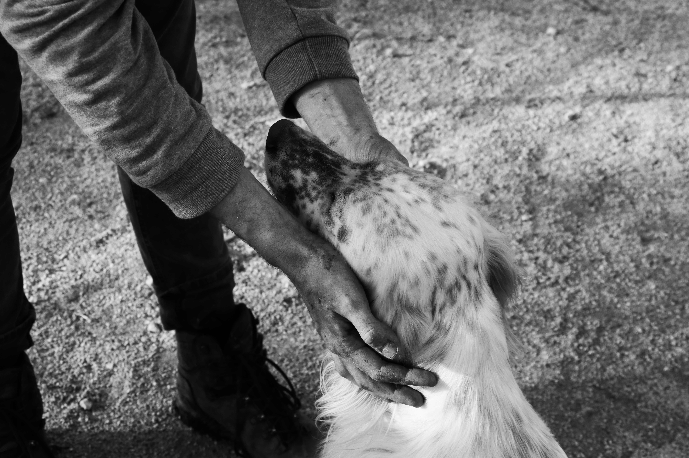
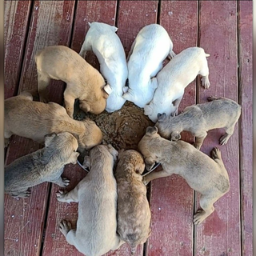
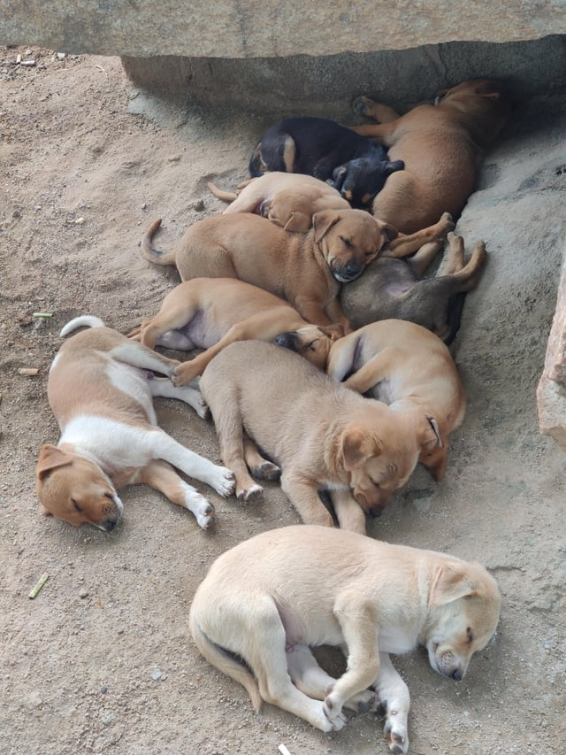
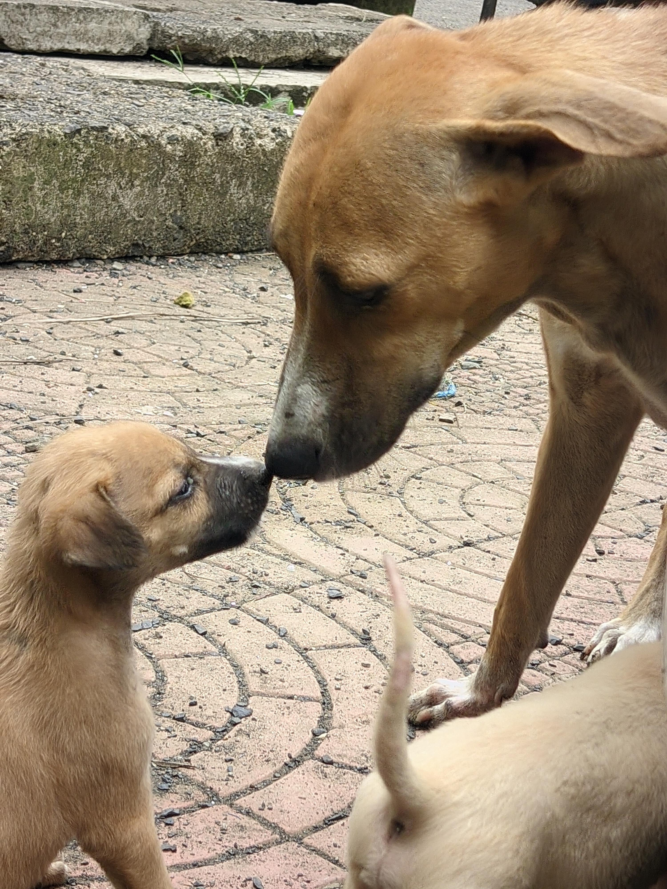
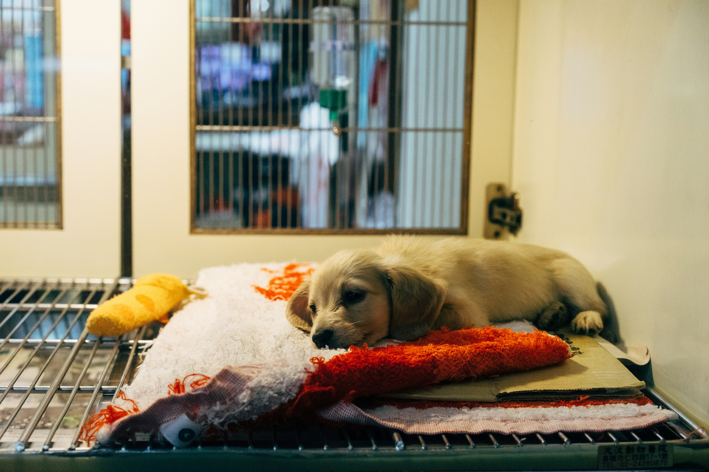
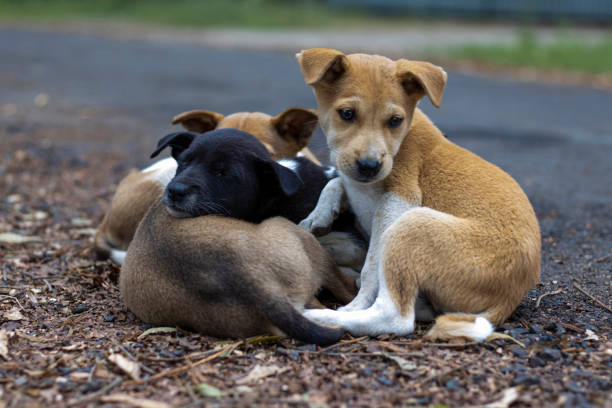

📸 हमारी सेवाएं

भूखे को भोजन

बीमार का इलाज

गर्मी में पानी सेवा

सड़क किनारे सहारा

ममता की छांव
प्रसव के समय सहायता

हर जीव की रक्षा

प्यार और सहारा
पशु और पक्षियों की सेवा ही सच्ची मानवता है
भूखे को भोजन
बीमार का इलाज
गर्मी में पानी सेवा
सड़क किनारे सहारा
ममता की छांव
प्रसव के समय सहायता
हर जीव की रक्षा
प्यार और सहारा
आपका छोटा सा योगदान किसी जानवर की जिंदगी बदल सकता है।
UPI ID: 7357897775@ptyes

आप सभी का सहयोग हमारे लिए अमूल्य है।
UPI ID: 7357897775@ptyes
Tommy: इलाज से नई जिंदगी
Bird Pots: गर्मी में जीवनदायिनी सेवा
Rani: सुरक्षित प्रसव और गोद लिया गया
गर्मी के दिनों में जब प्यास से पक्षी तड़पते हैं, तब आपकी दी गई मदद से हमने 70+ जल पात्र शहर की दीवारों पर लगाए। हर एक जल पात्र जीव रक्षा की परंपरा को आगे बढ़ा रहा है।
गर्मी में प्यासे पक्षियों के लिए पानी का इंतजाम एक पुण्य कार्य है। छोटे-छोटे बर्तन में पानी और दाना रखकर आप अनगिनत जीवों की जान बचा सकते हैं।
गाय हमारी माँ समान है। बीमार, भूखी या प्यासी गायों की सेवा करना हमारा धर्म है। छोटा सा सहयोग किसी माँ के लिए संजीवनी बन सकता है।
राजस्थान के एक गाँव में 12 वर्षीय आयुष हर सुबह अपनी छत पर मिट्टी के बर्तन में पानी और चावल डालता है। पिछले 3 सालों से वह गर्मी में परिंदों की सेवा कर रहा है। उसकी छत पर अब रोज़ 50 से अधिक चिड़ियाँ आती हैं। उसका कहना है – “अगर हम उनके लिए नहीं सोचेंगे, तो कौन सोचेगा?”
जयपुर के पास रहने वाले 68 वर्षीय श्रीमती शांति देवी और उनके पति ने अपने जीवन की बचत से एक छोटी सी गौशाला बनाई। आज वे 15 बीमार और बेसहारा गायों की देखभाल कर रहे हैं। सुबह 5 बजे से लेकर रात 9 बजे तक वे खुद उनकी सेवा करते हैं। उनका कहना है – “गौमाता की सेवा ही हमारी असली पूजा है।”
वर्ष 1730, जोधपुर के निकट खेजड़ली गाँव में अमृता देवी विश्नोई ने पेड़ों और जीवों की रक्षा के लिए अपने प्राण त्याग दिए।
उनके साथ 363 विश्नोई समाज के लोगों ने बलिदान दिया।
उनका वाक्य आज भी प्रेरणास्रोत है:
“सर सांतें रूख रहे तो भी सस्तो जाण”
राजस्थान की यह भूमि जीवों के लिए अपना सर्वस्व समर्पित करने वालों की भूमि है।